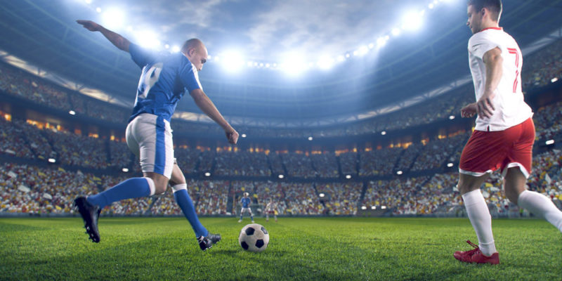

Fubtol

El fútbol o futbol2 (del inglés británico football, traducido como balompié)3 es un deporte de equipo jugado entre dos conjuntos de once jugadores cada uno y algunos árbitros que se ocupan de que las normas se cumplan correctamente. Es ampliamente considerado el deporte más popular del mundo, pues lo practican unas 270 millones de personas.4 También se le conoce como futbol asociación o fútbol asociación, nombre derivado de The Football Association, primera federación oficial del mundo en este deporte y que utilizó ese nombre para distinguirlo de otros deportes que incluyen la palabra "futbol" o "fútbol".5 En algunos países de habla inglesa también se le conoce como soccer, abreviatura de association, puesto que el nombre de football en esos países se asocia mayoritariamente a otros deportes con esa denominación (principalmente en Estados Unidos, donde el nombre football aplica para el fútbol americano, un deporte totalmente distinto).
El terreno de juego es rectangular de césped natural o artificial, con una portería o arco a cada lado del campo. Se juega mediante una pelota que se debe desplazar a través del campo con cualquier parte del cuerpo que no sean los brazos o las manos, y mayoritariamente con los pies (de ahí su nombre). El objetivo es introducirla dentro de la portería o arco contrario, acción que se denomina marcar un gol. El equipo que logre más goles al cabo del partido, de una duración de 90 minutos, es el que resulta ganador del encuentro.
Básquetbol

El baloncesto (del inglés basketball; de basket, 'canasta', y ball, 'pelota'), básquetbol, básketball o simplemente básquet o básket,1 es un deporte de equipo, jugado entre dos conjuntos de cinco jugadores cada uno durante cuatro períodos o cuartos de diez2 o doce minutos cada uno. El objetivo del equipo es anotar puntos introduciendo un balón por la canasta, un aro a 3,05 metros sobre la superficie de la pista de juego del que cuelga una red. La puntuación por cada canasta o cesta es de dos o tres puntos, dependiendo de la posición desde la que se efectúa el tiro a canasta, o de uno, si se trata de un tiro libre por una falta de un jugador contrario. El equipo ganador es el que obtiene el mayor número de puntos.
El contacto con la pelota se realiza con las manos. Los jugadores, también llamados baloncestistas, no pueden trasladarse sujetando la pelota, sino botándola contra el suelo. El equipo en posesión del balón o atacante, intenta anotar puntos mediante tiros, entradas a canasta o mates, mientras que el equipo defensor busca impedirlo robando la pelota o efectuando tapones. Cuando un tiro hacia la canasta fracasa, los jugadores de ambos equipos intentan atrapar el rebote.
Boxeo
El boxeo (del inglés boxing), también llamado a veces2 boxeo inglés o boxeo irlandés, y comúnmente conocido como box, es un deporte de contacto en el que dos contrincantes luchan utilizando únicamente sus puños con guantes, golpeando a su adversario de la cintura hacia arriba, dentro de un cuadrilátero especialmente diseñado para tal fin; la pelea se lleva a cabo en breves secuencias de lucha denominadas asaltos y de acuerdo a un preciso reglamento, el cual regula categorías de pesos y duración del encuentro, entre otros aspectos. De un modo más general, boxeo o "boxing" se refiere a un amplio género de deportes de combate en las que dos oponentes se enfrentan en lucha utilizando los puños, tapados por guantes y diferenciándose según sus reglas diferentes deportes como el ya mencionado boxeo inglés o boxeo propiamente dicho, el boxeo francés o savate, el boxeo chino o boxeo Shaolín, el kick boxing o boxeo japonés, el muay thai o boxeo tailandés, el suntukan o boxeo filipino, y los antiguos estilos de pugilato griegos como el pygmachia y el pancracio.3
Tradicionalmente ha sido considerado como una práctica deportiva exclusivamente masculina, aunque también existan mujeres que practiquen este deporte. El reconocimiento de los derechos de las mujeres y los avances en la lucha contra la discriminación, han permitido que en las últimas décadas se registrara un auge del boxeo femenino, por lo que los Juegos Panamericanos de 20115 y los Juegos Olímpicos de Verano de 2012 incluyeron el boxeo femenino en varias categorías.6
Ciclismo

El ciclismo es la utilización de la bicicleta como medio de transporte, deporte, ejercicio físico o recreación.
El ciclismo deportivo utiliza una bicicleta1 para recorrer Circuitos al Aire Libre o en Pista Cubierta y que engloba diferentes especialidades como las que se mencionan a continuación: